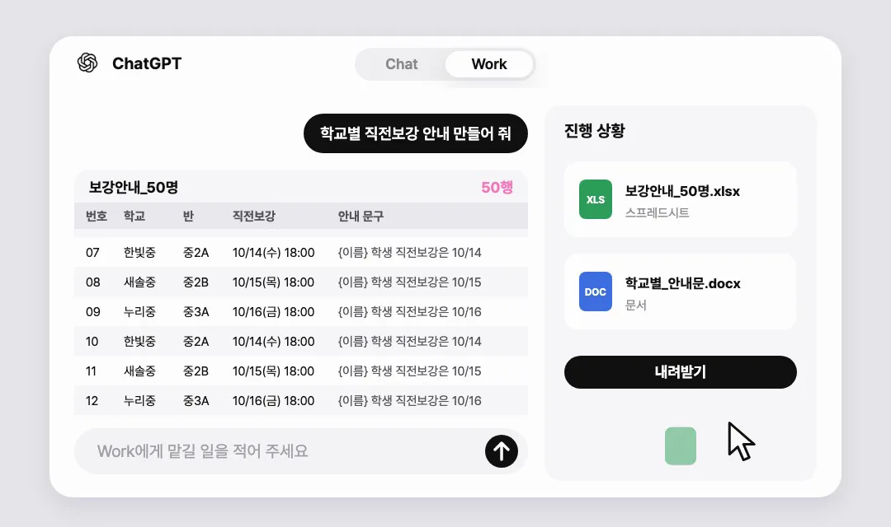
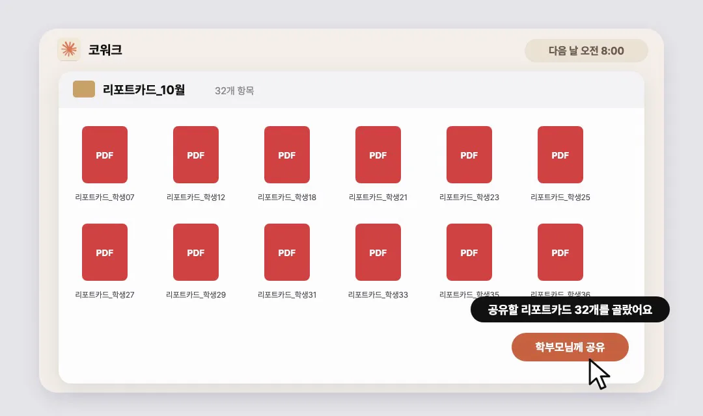
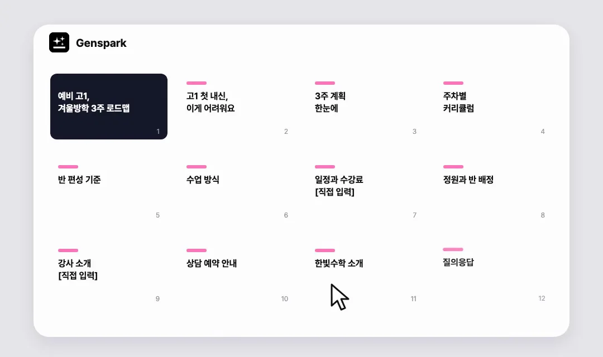
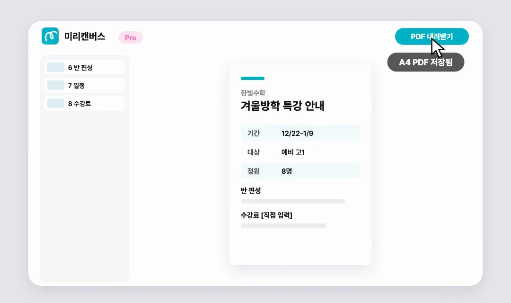
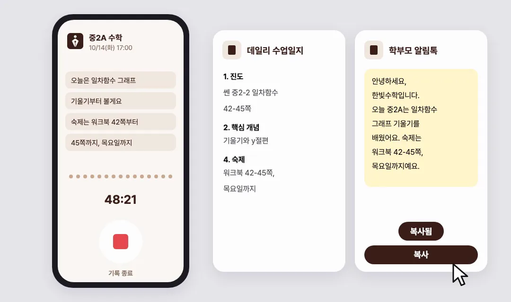

먼저 짚어 볼게요
원장님 하루 중 가장 귀찮은 순간 5개
아래 다섯 장면 중 "어, 이거 딱 나야" 싶은 게 하나라도 있다면, 눌러서 그 툴로 바로 가 보세요. 다섯 개를 다 쓰실 필요는 없습니다.
- 시험 3주 전 밤학교마다 다른 시험일정 공지를 캡처해 놓고, 보강표와 안내 문자를 학교별로 따로 짜는 순간01 챗GPT 워크 →
- 월말 마감 날출결 엑셀과 성적 엑셀을 번갈아 열며 학생마다 리포트카드를 채우는 순간02 클로드 코워크 →
- 새 단원 들어가기 전날슬라이드로 보여 주면 좋겠는데, PPT 만들 시간이 없어 판서와 프린트로 버티는 순간03 젠스파크 AI 슬라이드 →
- 특강 모집 시즌챗GPT로 만든 홍보 이미지가 어딘가 "AI 느낌"이라 올리기 망설여지는 순간04 미리캔버스 템플릿 →
- 금요일 퇴근 직전이번 주 수업을 기억에 기대어 주간 리포트로 다시 쓰는 순간05 티로 수업 녹음 →
툴마다 영상, 한 장 요약, 오늘 5분이면 해 보는 프롬프트 하나를 먼저 보여 드려요. 준비물, 따라 하기, 활용 예시, 자주 막히는 곳, 주의점은 접어 두었으니 필요할 때 눌러 펼쳐 보세요. 개인정보와 요금 이야기는 맨 아래 시작하기 전에에 모았습니다.
01 | 챗GPT 워크
Chat 말고 Work로 바꿔 보세요

예시 화면이에요. 실제 화면 구성은 조금 다를 수 있어요.
위쪽 버튼을 Chat에서 Work로 누르면
대답 대신 완성 파일을 만들어 줘요
보강표 엑셀, 안내문까지 한 번에요
오늘 5분이면 해 보는 첫 한 가지
시험일정 공지 캡처와, 이름을 지운 명단 엑셀만 있으면 됩니다. Work로 바꾼 뒤 두 파일을 올리고 아래 문장을 붙여 넣어 보세요.
왜 이 툴일까요
시험 기간마다 학교별 시험일정 공지를 하나씩 보면서 보강표를 짜고, 그 표를 보며 안내 문구를 또 쓰셨죠. 챗GPT를 쓰는 원장님은 많지만, 대부분 "문장 하나 써 줘"에서 멈춰요. 답을 받아 엑셀에 옮기고 표로 다시 만드는 건 여전히 원장님 몫이었습니다.
2026년 7월에 나온 ChatGPT Work는 한 걸음 더 나갑니다. 화면 위쪽 버튼을 Chat에서 Work로 바꾸면, 챗GPT가 여러 단계를 거쳐 표, 문서, 슬라이드 같은 완성 파일까지 만들어 줘요.
채팅과 무엇이 다를까요
채팅은 읽고 끝나는 답을 주고, Work는 고쳐 쓸 수 있는 완성 파일을 만들어 줍니다. 문자 한 통, 공지 문장 다듬기는 지금처럼 채팅이 빠르고 편해요. 학교별 보강표 엑셀, 작년 설명회 자료를 올해 일정으로 바꾸는 일처럼 결과물이 파일인 일만 Work로 넘기면 됩니다.
요금제는 확인하고 쓰세요. Work는 Plus 요금제부터 웹과 휴대폰에서 열립니다. 무료 요금제는 데스크톱 앱에서만 제한적으로 써 볼 수 있어요. Work는 채팅과 사용량을 따로 세고, 작업이 클수록 빨리 닳습니다.
첫 요청에 이것만 적어 주세요. 받을 파일(엑셀, 문서), 쓸 자료, 지어내지 말 것, 그리고 "다 만들면 멈추고 보내지 말 것". 중간에 Work가 물어 오면 답하고, 완성 파일의 날짜와 숫자는 원장님이 한 번 확인합니다.
준비물
- 요금제 Plus(월 $20) 이상을 추천합니다. Plus부터 웹과 휴대폰에서 쓸 수 있고, 무료와 Go 요금제는 데스크톱 앱에서만 제한적이에요. 원화 결제 금액은 공식 요금 페이지에서 확인해 주세요.
- 설치할 앱 없어도 됩니다. chatgpt.com 에서 바로 쓰고, 데스크톱 앱이 있으면 전환 버튼이 더 잘 보여요.
- 필요한 파일 학교별 시험일정 공지 캡처, 학생 번호와 학교만 남긴 명단 엑셀(이름과 연락처 열은 지운 복사본)
상세 따라 하기9단계
- chatgpt.com 또는 챗GPT 앱에 로그인합니다.
- 화면 위쪽의 전환 버튼에서 Work를 누릅니다. 데스크톱 앱은 위쪽 가운데 버튼, 모바일 앱은 위쪽 드롭다운에서 고르는 방식이에요.
- 명단 엑셀의 복사본을 만들고 이름, 연락처 열을 지웁니다. 학생 번호, 학교, 학년, 반만 남기면 충분합니다.
- 입력창 왼쪽의 [+] 버튼을 눌러 시험일정 공지 캡처와 명단 엑셀을 올립니다. 캡처는 학교별로 한 장씩 나눠 올리면 더 정확하게 읽어요.
- 위 프롬프트를 붙여 넣고 보냅니다.
- Work가 작업 계획과 진행 상황을 화면에 보여 줍니다. "두 학교 보강 시간이 겹치는데 어떻게 할까요?"처럼 되물으면 답해 주세요.
- 완성된 파일이 대화창에 나오면 눌러서 내려받습니다. 엑셀(xlsx)로 바로 받아지는지는 처음 한 번 확인해 두세요.
- 보강표의 시험일을 원본 공지와 한 번 대조합니다. "확인 필요"로 표시된 칸은 직접 채워요.
- 안내 문구의 {이름} 자리를 채워, 쓰시던 문자나 알림톡 프로그램으로 보냅니다.
Work 꿀팁 3가지
- 첫 요청에 파일 구성(시트 이름, 문서 이름)과 멈출 지점을 적어 두세요. 위 프롬프트의 마지막 줄 "다 만들면 멈추고, 보내지 마"가 그 역할을 합니다.
- 작년 자료를 참고 파일로 올리고 "형식은 그대로, 내용만 올해 것으로 바꿔 줘"라고 하면 같은 양식으로 새 파일이 나와요. 숫자와 날짜는 한 장씩 확인합니다.
- 시간표, 휴원일, 문자 말투 원칙을 프로젝트에 올려 두고 그 안에서 Work를 시작하면 자료를 매번 다시 올리지 않아도 됩니다. 문구 정리처럼 가벼운 일은 가벼운 모델을 고르면 사용량이 오래 가요. 다만 프로젝트 메모리를 "프로젝트 전용"으로 바꾼 곳에서는 Work가 열리지 않습니다.
이렇게도 써 보세요3가지
- 시험 기간 학교마다 시험일이 달라 보강표를 따로 짜는 일이에요. 위 프롬프트 그대로 쓰시면 됩니다.
- 월초 이번 달 수업 일정표 엑셀을 올리고, 휴원일을 반영한 반별 월간 시간표 엑셀과 학부모 안내문을 같이 만들어 달라고 해 보세요.
- 설명회 준비 작년 설명회 안내문을 올리고 올해 날짜와 장소만 알려 주면, 올해 일정으로 바뀐 안내문 한 장이 나와요.
자주 막히는 곳과 해결3가지
- 위쪽에 Work 버튼이 안 보여요
- 요금제부터 확인해 주세요. 웹과 휴대폰의 Work는 Plus부터 열리고, 무료 요금제는 데스크톱 앱에서만 제한적으로 보여요. 앱을 최신 버전으로 업데이트하고, 휴대폰이라면 위쪽 드롭다운을 눌러 Work가 있는지 봅니다.
- 캡처 속 시험일을 잘못 읽었어요
- 캡처를 학교별로 한 장씩 나눠 올리고, 프롬프트의 "확인 필요로 표시" 문장을 지우지 마세요. 공지 글을 복사할 수 있다면 캡처 대신 글을 붙여 넣는 게 가장 정확합니다.
- 파일이 아니라 대화창에 표로만 답해요
- 위쪽 버튼이 Work로 바뀌어 있는지 먼저 봅니다. 그다음 엑셀 파일로 내려받을 수 있게 만들어 달라고 한 줄 더 보내 보세요.
주의점
- Work는 연결한 앱에 따라 승인을 받고 메시지를 보낼 수도 있어요(Mac 앱의 메시지 플러그인). 학부모님께 가는 문자는 원장님이 확인한 뒤 나가도록, 보내기 전에 멈추게 해 두세요.
- 명단에는 학생 번호, 학교, 학년, 반만 남기고 이름과 연락처는 지운 뒤 올립니다.
- 보강 날짜와 시간은 보내기 전에 원장님이 한 번 더 확인해 주세요. AI가 만든 표는 초안입니다.
02 | 클로드 코워크
내 컴퓨터에 들어오는 나만의 비서

예시 화면이에요. 결과 파일 형식은 요청과 환경에 따라 달라질 수 있어요.
컴퓨터 속 출결, 성적 파일을
퇴근 전에 맡겨 두고 퇴근하시면
아침엔 공유할 리포트카드가 완성돼요
오늘 5분이면 해 보는 첫 한 가지
퇴근 전 5분이면 됩니다. 출결, 성적, 과제 엑셀의 복사본을 담은 폴더를 Cowork에 연결하고, 아래 문장을 붙여 넣은 뒤 컴퓨터와 클로드 앱을 켜 둔 채로 퇴근하세요.
왜 이 툴일까요
월말마다 출결 엑셀과 성적 엑셀을 번갈아 열면서 리포트카드 만드느라 밤늦게까지 남으셨죠. AI에게 엑셀을 맡기려면 보통 파일을 하나씩 올리고, 결과를 내려받고, 다시 폴더에 정리해야 해요.
클로드의 코워크(Cowork)는 반대로 AI가 내 컴퓨터 폴더에 직접 들어와 일합니다. 원장님이 허락한 폴더 안에서 출결, 성적 파일을 열어 보고, 결과 파일을 그 폴더에 저장해 둬요.
준비물
- 요금제 유료 요금제에서만 됩니다. Pro 월 $20(연 결제 시 월 $17)부터이고, 무료 요금제에서는 쓸 수 없어요.
- 설치할 앱 클로드 데스크톱 앱(맥, 윈도우). claude.com/download 에서 받습니다.
- 필요한 파일 출결, 성적, 과제 엑셀의 복사본을 모은 폴더 하나. 학생 이름은 번호로 바꾸고, 연락처와 상담 메모는 빼 둡니다.
상세 따라 하기10단계
- claude.com/download 에서 맥 또는 윈도우용 데스크톱 앱을 설치하고, 유료 요금제 계정으로 로그인합니다.
- 바탕화면에 '리포트카드_작업' 폴더를 새로 만들고, 출결, 성적, 과제 엑셀의 복사본을 넣습니다. 원본 폴더는 연결하지 않아요.
- 복사본 엑셀에서 학생 이름 열을 번호로 바꾸고, 연락처와 상담 메모 열은 지웁니다. 파일마다 학생 번호 열 이름을 똑같이 맞춰 두면 합칠 때 실수가 줄어요.
- 앱 화면에서 Cowork를 고릅니다. 앱 버전에 따라 위쪽 탭이나 왼쪽 메뉴에 있어요.
- 입력창 근처의 폴더 선택 버튼을 눌러 '리포트카드_작업' 폴더를 연결합니다. 폴더 접근을 허락할지 묻는 창이 뜨면 허락해 주세요.
- 퇴근 전에 위 프롬프트를 붙여 넣고 보냅니다. 처음 몇 번은 코워크가 보여 주는 작업 계획을 읽어 보고 승인하는 방식으로 써 보세요.
- 컴퓨터가 잠자기로 들어가지 않게 전원 설정을 확인합니다. 맥은 시스템 설정의 배터리 또는 에너지 메뉴, 윈도우는 설정 > 시스템 > 전원에서 바꿀 수 있어요.
- 학원 컴퓨터와 클로드 앱은 켜 둔 채로 퇴근합니다. 코워크는 앱이 열려 있을 때만 폴더에서 일해요.
- 다음 날 아침 '리포트카드_10월' 폴더를 열고, 학생 2~3명만 원본 엑셀과 숫자를 대조합니다.
- 선생님 코멘트 칸을 채운 뒤, 쓰시던 문자나 알림톡 프로그램으로 학부모님께 공유합니다.
이렇게도 써 보세요3가지
- 상담 주간 전 출결과 과제 엑셀을 합쳐, 출석률이나 과제 제출률이 낮은 학생 번호만 '상담대상' 파일로 뽑아 달라고 해 보세요.
- 학기 초 "최종", "최종2"가 쌓인 자료 폴더 복사본을 학년, 과목, 학교 순서로 정리시킵니다. 옮기기 전에 계획부터 보여 달라고 하면 안전해요.
- 시험 기간 이벤트 시험 기간에 자습실을 열고, 출석한 학생 중 추첨해 장학금을 주는 학원들이 있어요. 자습실 출석 기록 엑셀로 추첨 대상 명단을 뽑아 둘 수 있습니다.
자주 막히는 곳과 해결3가지
- Cowork 메뉴가 안 보여요
- 무료 요금제에서는 나오지 않아요. 유료 요금제로 로그인했는지, 데스크톱 앱이 최신 버전인지 확인해 주세요. 내 컴퓨터 폴더를 쓰는 작업은 데스크톱 앱에서 하셔야 합니다.
- 아침에 보니 작업이 중간에 멈춰 있어요
- 컴퓨터가 잠자기로 들어갔거나, 앱이 닫혔거나, 코워크가 승인 질문을 띄워 놓고 기다리는 경우가 많아요. 전원 설정을 바꾸고, 애매한 건 마지막에 목록으로 알려 달라고 덧붙여 보세요. 파일을 옮기거나 지우는 작업만은 계속 먼저 묻게 두는 게 안전합니다.
- 리포트카드 숫자가 원본과 달라요
- 파일마다 학생 번호 열 이름이 다르면 잘못 합쳐질 수 있어요. 열 이름을 통일하고, 학생 번호 열을 기준으로 합쳐 달라고 적어 주세요. 첫 달은 꼭 2~3명을 원본과 대조합니다.
주의점
- 폴더를 연결하면 그 안의 파일은 전부 클로드가 볼 수 있어요. 학생 연락처, 상담 메모가 든 파일은 폴더에서 빼고 연결하세요.
- 리포트카드를 PDF로 받을지 엑셀로 받을지는 첫 달에 한 장만 먼저 만들어 보고 정하시는 걸 권해 드려요.
- 처음에는 작업마다 승인하는 방식으로 쓰고, 익숙해진 뒤에 맡기는 범위를 넓힙니다.
03 | 젠스파크 AI 슬라이드
새 AI로 수업 PPT 제작

예시 화면이에요. 슬라이드 구성은 요청한 수업 흐름에 따라 달라집니다.
커리큘럼, 수업 내용, 문제집 PDF만
올리면 수업용 슬라이드가 바로 나와요
더 생동감 있고 체계적인 수업이 돼요
오늘 5분이면 해 보는 첫 한 가지
다음 수업 한 차시만 골라 커리큘럼과 교재 해당 쪽 PDF를 AI 슬라이드에 올리고 아래처럼 요청해 보세요. 단원과 학년만 바꿔 쓰시면 됩니다.
왜 이 툴일까요
슬라이드로 보여 주면 아이들이 더 잘 따라올 것 같은데, 단원마다 PPT를 만들 시간이 없어 판서와 프린트로 버티고 계셨다면요. 젠스파크 AI 슬라이드는 커리큘럼, 수업 내용, 문제집 내용을 올리면 수업용 슬라이드를 바로 만들어 줍니다. 9월에는 슬라이드 전용으로 새로 학습한 AI 모델(Gen-1 Slides)이 기본으로 들어갔어요.
슬라이드 수업은 학원마다 맞는 정도가 달라서, 여기 적은 활용법은 한 반에서 먼저 시험해 보시라는 제안으로 읽어 주세요.
준비물
- 요금제 무료로 시작할 수 있어요. 하루 100 크레딧 안에서 만들고, 브라우저 발표와 링크 공유까지 됩니다. PPTX, PDF 내려받기는 유료 요금제이고, 가격과 한 벌에 드는 크레딧은 가입 후 확인해 주세요.
- 설치할 앱 없어요. genspark.ai 에서 브라우저로 씁니다.
- 필요한 파일 커리큘럼, 교재 해당 쪽 PDF. 한글(hwp) 파일은 PDF로 저장하고, 문제집은 해당 쪽만 스캔한 PDF가 가장 확실해요.
상세 따라 하기8단계
- genspark.ai 에 가입하고 로그인합니다.
- 첫 화면의 기능 목록에서 AI 슬라이드를 누릅니다. 모드는 기본값 그대로 둬요.
- 한글(hwp) 커리큘럼은 한글 프로그램의 PDF 저장으로 바꿔 둡니다. 문제집은 수업할 쪽만 스캔해 PDF 하나로 묶어 주세요.
- 입력창의 첨부(클립 모양) 버튼을 누르거나 파일을 입력창에 끌어다 놓습니다. PDF, 워드, 엑셀, 파워포인트 파일을 올릴 수 있어요.
- 위 프롬프트를 붙여 넣고 보냅니다. 복습, 개념, 예제, 확인 문제, 정리처럼 수업 흐름을 적을수록 결과가 안정적입니다.
- 슬라이드가 채워지면 글자를 클릭해 바로 고치거나, 입력창에 "3번 장 예제 하나 더"처럼 말로 수정을 요청합니다.
- 예제와 확인 문제의 정답은 수업 전에 선생님이 직접 한 번 풀어 확인해 주세요.
- 수업 때는 발표(프레젠테이션) 버튼으로 브라우저에서 바로 띄웁니다. 유료 요금제라면 내려받기 메뉴에서 PPTX나 PDF로 받을 수 있어요.
이렇게도 써 보세요3가지
- 새 단원 첫 수업 커리큘럼 한 장만 올려도 그림 중심의 개념 도입 슬라이드가 나와요.
- 시험 전 오답 수업 반에서 많이 틀린 문제 쪽을 스캔해 올리고, 한 문제당 2장씩 풀이 슬라이드를 만들어 달라고 해 보세요.
- 학부모 설명회 작년 설명회 자료를 올리고 올해 커리큘럼과 일정만 알려 주면, 설명회 슬라이드 초안이 새로 나옵니다.
자주 막히는 곳과 해결3가지
- 한글(hwp) 파일이 안 올라가요
- 한글 프로그램에서 PDF로 저장한 뒤 올려 주세요. 올릴 수 있는 파일은 PDF, 워드, 엑셀, 파워포인트입니다.
- 내려받으려고 하니 결제 화면이 나와요
- 무료 요금제는 브라우저 발표와 링크 공유까지만 돼요. 수업 때 브라우저로 바로 띄우면 무료로도 쓸 수 있고, 파일로 보관하고 싶을 때만 유료로 올리시면 됩니다.
- 풀이나 수식이 틀리게 나와요
- AI가 풀이 과정을 틀리게 쓸 수 있어요. 틀린 장은 장 번호를 짚어 교재 풀이대로 고쳐 달라고 요청합니다. 수업 전에 선생님이 한 번 풀어 보는 단계는 빼지 마세요.
주의점
- 문제집 내용을 슬라이드로 옮겨 원내 수업에 쓰는 것과, 그 슬라이드를 외부에 공개하거나 배포하는 건 다릅니다. 출판사 저작권이 있으니 공유 링크는 학원 밖으로 돌리지 마세요.
- 문제집 사진(이미지)만 올려서 슬라이드가 잘 되는지는 아직 확인하지 못했어요. 지금은 PDF(스캔본)로 올리시는 걸 권해 드려요.
- 수식과 도형 표현 품질은 과목마다 다를 수 있으니, 첫 수업은 한 반에서만 써 보세요.
04 | 미리캔버스 템플릿
GPT 느낌 싫다면 템플릿으로

예시 화면이에요. 실제 템플릿과 메뉴 위치는 다를 수 있어요.
학원 홍보 카드뉴스와 포스터는
템플릿을 골라 빠르게 만들어요
문구 손질은 AI 미리클에 맡겨요
오늘 5분이면 해 보는 첫 한 가지
"학원 홍보" 템플릿 하나만 열고, 제목 칸을 선택한 뒤 미리클 AI 라이팅에 아래 문장을 넣어 보세요. 원래 문구 자리만 우리 학원 문구로 바꾸면 됩니다.
왜 이 툴일까요
특강 모집 공지를 챗GPT 이미지로 만들었는데, 한눈에 "AI가 만든 것 같다"는 느낌이 들어 올리기 망설여지셨죠. 학부모님께 보이는 홍보물은 신뢰가 중요합니다. 미리캔버스는 디자이너가 만든 한국형 템플릿이 많아서, 템플릿을 고르고 글자만 바꾸면 AI 티가 덜 나는 카드뉴스와 포스터를 빠르게 만들 수 있어요.
미리클은 뭔가요? 미리캔버스가 2025년 4월에 내놓은 AI 기능 묶음 이름이에요. 편집 화면 안에서 AI 라이팅으로 문구를 쓰고 다듬고, AI 이미지 편집으로 배경을 지우거나 화질을 높일 수 있습니다. 채팅하듯 디자인 전체를 고쳐 주는지까지는 확인하지 못해서, 디자인은 템플릿으로 잡고 문구와 이미지 손질만 미리클에게 맡기는 조합으로 안내해요.
준비물
- 요금제 무료로 시작합니다. 왕관 표시 없는 템플릿과 요소는 무료예요. 미리클 AI는 무료에서 사용 횟수 제한이 있고 Pro에서는 제한 없이 쓰는데, 현재 Pro 가격은 요금제 페이지에서 확인해 주세요.
- 설치할 앱 없어요. miricanvas.com 에서 브라우저로 씁니다.
- 필요한 파일 학원 로고, 학원이나 수업 사진, 특강 이름과 일정, 대상, 상담 방법 문구. 학생 얼굴 사진은 학부모님 동의를 받은 것만 씁니다.
상세 따라 하기9단계
- miricanvas.com 에 학원 업무용 이메일로 가입합니다.
- 첫 화면 검색창에 "학원 홍보", "학원 모집", "특강 모집", "카드뉴스"처럼 용도를 검색합니다.
- 크기를 먼저 고릅니다. 인스타 카드뉴스는 정사각형이나 세로형, 원내 포스터는 A4나 A3가 맞아요.
- 썸네일에 왕관 표시가 없는 템플릿을 고르면 무료로 끝까지 쓸 수 있습니다.
- 편집 화면에서 학원 이름, 전화번호, 일정 글자를 더블클릭해 바꿉니다.
- 왼쪽 메뉴의 [업로드]에서 학원 로고와 사진을 올리고, 템플릿의 사진 자리에 끌어다 놓습니다.
- 문구 칸을 선택하고 미리클 AI 라이팅을 엽니다. 글자 도구 막대나 왼쪽 AI 메뉴에 있는데, 위치는 버전에 따라 다를 수 있어요. 위 프롬프트로 제목을 다듬습니다.
- 카드뉴스라면 페이지를 복제해 같은 디자인으로 2장, 3장을 이어서 만듭니다.
- 오른쪽 위 [다운로드]를 눌러 카드뉴스는 PNG, 포스터는 PDF로 받습니다. 인쇄할 포스터는 인쇄용 PDF 옵션이 보이면 그걸 고르세요.
이렇게도 써 보세요3가지
- 특강 모집 인스타 홍보 카드뉴스 4장을 표지(특강 이름), 이런 학생에게 필요해요, 일정과 대상, 상담 신청 방법 순서로 한 템플릿에서 이어 만들어요.
- 원내, 건물 게시판 A4, A3 포스터 템플릿에서 반 이름과 시간표만 바꿔 신규 반 개설 포스터를 만듭니다.
- 시험 기간 간식 DAY나 자습실 개방 안내를 원내 포스터와 카드뉴스로 같이 만들어 두세요. 같은 디자인을 복제해 네이버 플레이스, 블로그 대표 이미지로도 씁니다.
자주 막히는 곳과 해결3가지
- 다운로드하려니 결제하라고 나와요
- 왕관 표시가 있는 요소나 템플릿이 들어간 경우예요. 그 요소를 빼거나 무료 요소로 바꾸면 내려받을 수 있고, 계속 쓰실 거라면 Pro가 필요합니다.
- AI 라이팅 버튼을 못 찾겠어요
- 먼저 글자 상자를 한 번 클릭해 선택해 주세요. 글자 도구 막대나 왼쪽 AI 메뉴에서 찾을 수 있어요. 무료 요금제는 사용 횟수가 정해져 있어서, 횟수를 다 쓰면 버튼이 막힐 수 있습니다.
- 포스터를 인쇄하니 흐리게 나와요
- 화면용 PNG 대신 PDF로 받아 주세요. 인쇄용 옵션이 보이면 그걸 고르고, 올린 사진이 너무 작지 않은지도 확인합니다. 대량 인쇄는 같은 회사의 비즈하우스로 주문할 수 있어요.
주의점
- 미리캔버스 템플릿과 요소로 만든 디자인은 홍보물로 게시하고 인쇄해도 됩니다. 다만 요소를 다른 툴로 가져가 편집하면 저작권 문제가 생길 수 있으니 미리캔버스 편집기 안에서 편집하세요.
- 학생 얼굴 사진은 학부모님 동의를 먼저 받으세요.
- 수강료를 적는다면 교육청에 신고한 금액과 같은지 확인하세요.
05 | 티로 수업 녹음
학원 데이터화는 수업 녹음부터

예시 화면이에요. 알림톡 발송은 별도 설정이 필요합니다.
회의 녹음처럼 수업을 받아 적는 앱이에요
노션, 클로드와 이으면 위클리 리포트까지
수업일지 알림톡 자동 발송도 만들 수 있어요
오늘 5분이면 해 보는 첫 한 가지
노션도 클로드도 아직 필요 없어요. 티로의 나만의 템플릿에 아래 양식을 넣어 두고, 오늘 수업 하나만 녹음해 수업일지가 어떻게 나오는지 보세요.
왜 이 툴일까요
티로는 회의를 녹음하면 실시간으로 받아 적고 회의록까지 만들어 주는 AI 녹음 앱이에요. 이걸 수업에 쓰면 이야기가 달라집니다.
학원 데이터화라고 하면 출결과 성적부터 떠올리지만, 정작 수업에서 무엇을 가르쳤고 아이들이 어디서 막혔는지는 선생님 머릿속에만 남아요. 이 기록이 없으면 수업일지도, 주간 리포트도, 학부모님 상담도 매번 기억에 기대어 새로 써야 합니다. 수업을 녹음해 두면 수업일지, 노션 기록, 클로드가 쓰는 위클리 리포트, 알림톡까지 같은 기록 하나에서 이어져요. 학원 데이터화의 시작이 결국 수업 녹음인 이유입니다.
준비물
- 요금제 티로는 가입 후 3주 무료 체험(최대 300분, 노트당 50분)이고, 이후 Lite 월 8,900원부터예요. 나만의 템플릿은 Lite부터 씁니다. 노션은 개인 무료로 시작하고, 클로드 노션 커넥터가 무료에서 되는지는 연결 화면에서 확인해 주세요.
- 설치할 앱 티로 휴대폰 앱(녹음), 티로 웹이나 데스크톱 앱(노션 보내기), 노션, 클로드
- 필요한 것 수업 녹음 안내 공지, 노션 "수업일지" 데이터베이스. 알림톡까지 가려면 학원 카카오톡 채널(비즈니스 인증)과 솔라피 계정이 필요해요.
상세 따라 하기10단계
- 녹음과 데일리 수업일지(티로)
- tiro.ooo 에 가입하고 휴대폰에 티로 앱을 설치합니다. 교실에 노트북이 없으면 휴대폰 앱이 편해요.
- 나만의 템플릿에 위 데일리 수업일지 양식을 넣어 둡니다. 나만의 템플릿은 Lite 요금제부터 쓸 수 있어요.
- 수업을 시작할 때 녹음 버튼을 누르고, 끝나면 기록을 종료합니다. 요약과 함께 수업일지 문서가 만들어집니다.
- 수업일지를 노션으로 보내기
- 노션에 '수업일지' 데이터베이스를 하나 만듭니다. 속성은 날짜, 반, 선생님 정도면 충분해요.
- 티로 웹이나 데스크톱 앱에서 노트를 열고 공유하기 → Notion을 누릅니다. 처음 한 번은 노션 계정으로 로그인해 연동해요. 설정 > 연동 관리에서 미리 해 둘 수도 있습니다.
- 보낼 곳으로 수업일지 데이터베이스를 고르면 새 항목으로 들어갑니다. 보낼 내용에서 요약과 수업일지 문서를 체크해 주세요.
- 노션과 클로드로 위클리 리포트
- claude.ai 또는 클로드 앱에서 설정 > 커넥터로 들어가 Notion을 연결하고, 수업일지 데이터베이스가 있는 페이지에 접근을 허락합니다.
- 새 대화의 입력창 [+] > 커넥터에서 Notion이 켜져 있는지 확인합니다.
- 금요일 수업이 끝나면 클로드에게 노션 수업일지에서 이번 주 반 항목을 읽어 위클리 리포트를 써 달라고 요청합니다. 이번 주 배운 내용, 핵심 개념, 반 전체가 어려워한 부분, 숙제, 다음 주 진도 순서로, 수업일지에 없는 내용과 학생 개인 이름은 빼 달라고 하면 됩니다.
- 노션에 저장된 위클리 리포트를 읽어 보고, 비어 있는 요일이 없는지 확인한 뒤 학부모님께 공유합니다.
티로에서 노션으로 기록이 끝날 때마다 자동으로 보내는 설정은 2026년 9월 말 티로 안내 기준으로 새로 만들 수 없어요(자동 전송은 Slack만). 그래서 공유하기 한 번은 직접 눌러 주셔야 합니다. 휴대폰 앱에서는 노션 보내기가 안 되니 웹이나 데스크톱 앱에서 해 주세요.
더 나아가기: 티로 바로 읽기와 알림톡선택
클로드가 티로 노트를 바로 읽게 노션을 거치지 않고 연결할 수도 있어요. 클로드 커넥터 화면에서 Add custom connector를 누르고 이름은 Tiro, 주소는 https://mcp.tiro.ooo/mcp 를 넣은 뒤 티로 계정으로 로그인하면 됩니다. 다만 선생님들과 기록을 함께 쌓고 보기에는 노션이 편합니다.
솔라피 알림톡 수업이 끝나면 오늘 진도와 숙제를 학부모님께 알림톡으로 보내는 학원이 많죠. 이 발송을 솔라피(Solapi)로 자동화할 수 있지만 준비가 필요합니다. 학원 카카오톡 채널을 비즈니스 인증하고, solapi.com 에서 채널을 연동한 뒤, 알림톡 템플릿을 등록해 카카오 검수를 받아야 해요. 알림톡은 승인받은 템플릿으로만 보낼 수 있고, 진도와 숙제는 바뀌는 칸(변수)으로 넣습니다.
처음 한 달은 반자동을 권해 드려요. 클로드에게 오늘 수업일지로 반별 진도, 숙제, 다음 수업 표를 만들어 달라고 하고, 원장님이 확인한 뒤 솔라피에서 보내는 방식입니다. 완전 자동 발송은 솔라피 API 연결을 따로 만들어야 하고, 수업 안내가 검수를 통과하는지와 변수 길이 제한은 템플릿 등록 화면에서 먼저 확인해 주세요.
이렇게도 써 보세요3가지
- 매주 금요일 일주일 치 수업일지를 클로드가 반별 위클리 리포트로 한 번에 정리합니다.
- 상담 전 노션 수업일지에서 최근 4주 동안 그 반이 어려워한 단원만 모아 달라고 하면, 기억 대신 기록으로 상담 자료를 준비할 수 있어요.
- 선생님 교체, 대강 지난 수업일지를 그대로 넘겨 드리면 진도와 막힌 부분이 한 번에 전달됩니다.
자주 막히는 곳과 해결3가지
- 공유하기를 눌러도 Notion이 안 보여요
- 휴대폰 앱에서는 노션 보내기가 안 돼요. 티로 웹이나 데스크톱 앱에서 노트를 열어 주세요. 그래도 안 보이면 설정 > 연동 관리에서 노션 연동부터 해 둡니다.
- 90분 수업이 중간에 끊겼어요
- 무료 체험은 노트당 50분까지만 기록돼요. 쉬는 시간을 기준으로 두 번 나눠 녹음하거나, 유료 요금제로 올리면 됩니다.
- 클로드가 노션 수업일지를 못 찾아요
- 노션을 연결할 때 수업일지 데이터베이스가 있는 페이지에 접근을 허락했는지 확인해 주세요. 입력창 [+] > 커넥터에서 Notion이 켜져 있는지, 요청 속 데이터베이스 이름이 노션과 똑같은지도 봅니다.
주의점
- 녹음 전에 녹음한다는 사실을 먼저 알리세요. 수업 녹음은 학원 공지로 학생과 학부모님께 안내하는 게 안전합니다.
- 수업 중 학생 이름이 그대로 기록돼요. 노션과 알림톡으로 넘기기 전에 다른 학생 이름이 섞이지 않았는지 확인하세요.
- 알림톡은 잘못 보내면 되돌릴 수 없어요. 처음 한 달은 사람이 한 번 보고 보내는 반자동으로 운영해 보세요.
시작하기 전에
다섯 툴 모두 공통으로 지킬 것
- 학생 실명, 연락처, 주민번호, 주소, 성적, 상담 내용은 AI에 그대로 넣지 않습니다. 이름은 번호로 바꿔도 결과는 같아요.
- 각 서비스 설정의 데이터 메뉴에서 내 대화가 AI 학습에 쓰이는지 확인하고, 원치 않으면 꺼 두세요.
- 소개한 기능은 대부분 유료 요금제부터예요. 무료로 2주쯤 써 보고, 매일 여는 툴 하나만 유료로 올리세요.
- 클로드 코워크는 학원 컴퓨터와 클로드 앱을 켜 둔 상태에서만 작업합니다. 맡겨 두고 퇴근하실 때 컴퓨터를 끄지 마세요.
- AI가 만든 문장과 숫자는 초안입니다. 날짜, 금액, 학교 이름은 보내기 전에 한 번 더 확인해 주세요.
다섯 개 중 하나만 이번 주에 써 보셔도 충분합니다. 제일 귀찮았던 일이 하나 줄어들면, 그다음 툴은 훨씬 쉽게 붙어요.
원장님의 칼퇴도우미는 인스타그램 @hyunji.crabit에서 매주 수요일에 이어집니다.
이 글의 기능과 요금은 2026년 9월 30일 각 서비스 공식 자료 기준이에요. 버튼 이름과 위치, 요금제는 자주 바뀌니 결제 전에 공식 페이지를 한 번 더 확인해 주세요.